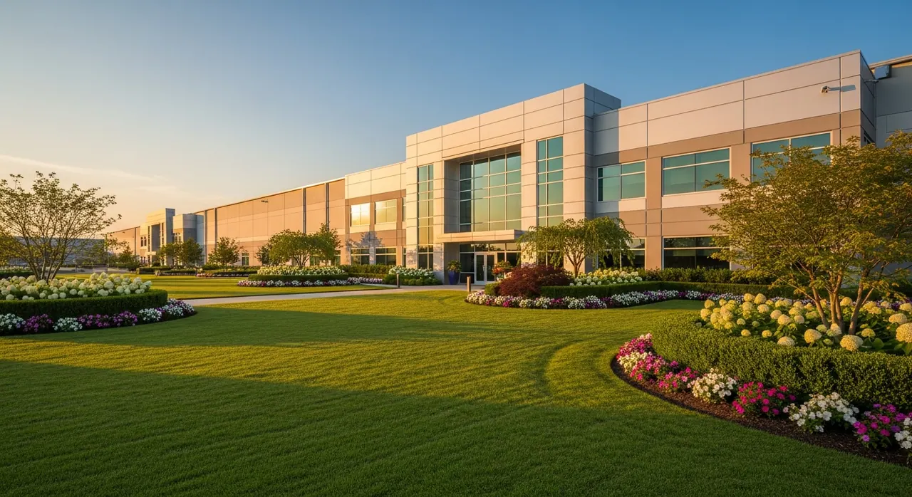
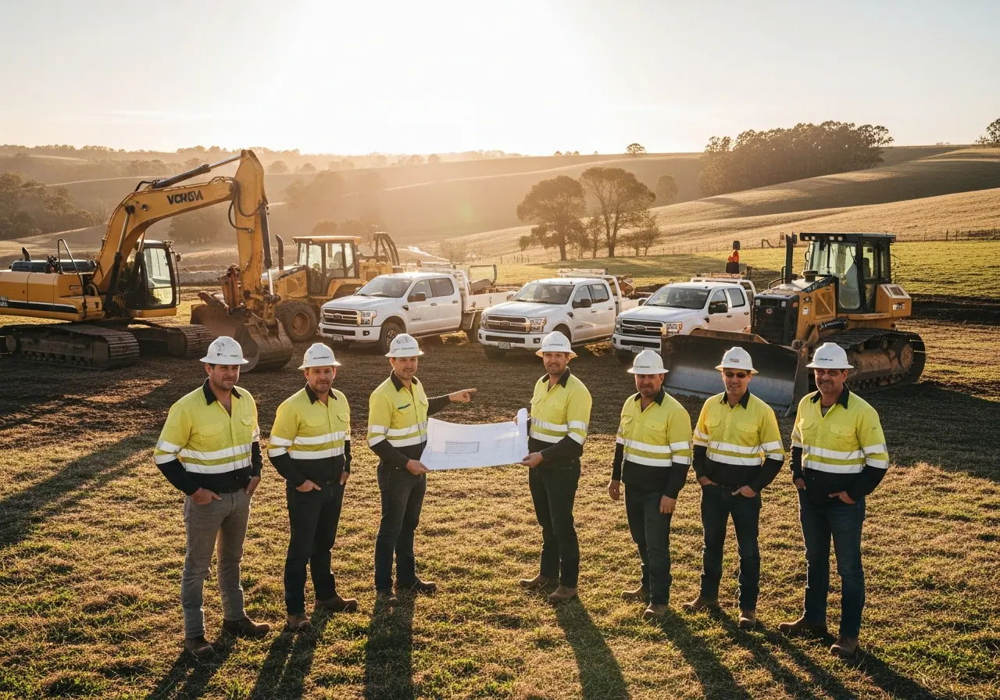

Land and Grounds Care With Nearly 30 Years of Experience
We help owners and managers look after large, working properties. From the first clearing job to regular grounds care, you have one team to call when something needs attention.
Who We Are
P1 Land & Property Management brings land preparation and ongoing care together. We clear and grade land, repair drainage, establish turf, and maintain the grounds as your property changes.
Our name is new, but our experience spans nearly 30 years. We work across Upstate South Carolina and the greater Charlotte area, on everything from busy commercial grounds to open farmland.
We work with property managers, farm operators, industrial facilities, municipalities, and institutions. We take time to understand how you use the land before recommending the work.
We serve properties 1 acre and larger and do not provide residential services. Our equipment and crews are set up for large-acreage work.

Help with What Comes Next
Whether you're clearing land, fixing drainage, or keeping the grounds in shape, we can help. Start with the work you need now, and we'll help you plan what comes next.
Where We Work
P1 serves commercial, industrial, agricultural, municipal, and institutional properties throughout Upstate South Carolina — including Greenville, Spartanburg, Anderson, Gaffney, Greer, Simpsonville, and surrounding counties — and the greater Charlotte, North Carolina region, including Concord, Mooresville, Lake Norman, Gastonia, Huntersville, Matthews, Waxhaw, Kannapolis, Indian Trail, Monroe, Belmont, Mount Holly, Cornelius, and the Mecklenburg County area. Our South Carolina border coverage includes Fort Mill, Rock Hill, and Indian Land, with large-acreage service throughout York County, Lancaster County, and Union County.
What to Expect From P1
- A written plan and clear pricing before work begins
- Commercial and agricultural property experience
- Equipped for large-scale earthwork and fine maintenance
- Serving both Upstate SC and Charlotte NC markets
- A site visit scheduled around your needs and our availability
Explore More With P1
Explore P1's Work
Learn about our services and where we work.
Let's Walk Your Property
Tell us where it is and what's going on. The site visit and written estimate are free.